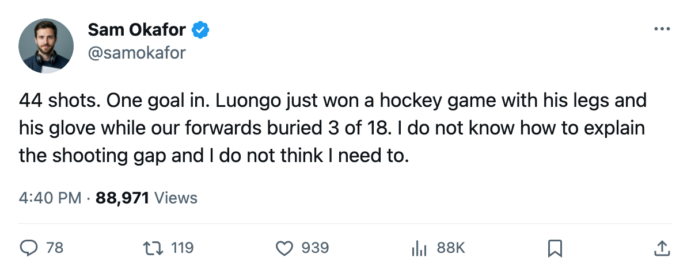

LEAFS 3, ISLANDERS 1, series 3-0: 44 shots in the building, and the sweep is tomorrow
New York fired 44 pucks at Roberto Luongo and scored once. Toronto fired 18 and scored three.
 Sam OkaforLeafs beat reporter · Queen City Telegram
Sam OkaforLeafs beat reporter · Queen City Telegram
The piece
 Roberto Luongo95 stopped 43 of 44 shots, and the
Roberto Luongo95 stopped 43 of 44 shots, and the  Toronto Maple Leafs Maple Leafs beat the
Toronto Maple Leafs Maple Leafs beat the  New York Islanders Islanders 3-1 on the road Tuesday to take a 3-0 series lead. Game 4 is at the Nassau Coliseum on Wednesday. Toronto can close the season's regular-season record against New York at 6-1-1 by winning it.
New York Islanders Islanders 3-1 on the road Tuesday to take a 3-0 series lead. Game 4 is at the Nassau Coliseum on Wednesday. Toronto can close the season's regular-season record against New York at 6-1-1 by winning it.
The game was a goaltending exhibition and a shooting-rate anomaly wrapped into one. New York generated 44 shots, more than it managed in any single meeting during the regular season against this Toronto club, and Luongo let exactly one through. The Toronto Maple Leafs forwards answered with 18 shots and scored three goals:  Marian Gaborik99 with a goal and an assist to extend his playoff point streak to 3 games and 7 points,
Marian Gaborik99 with a goal and an assist to extend his playoff point streak to 3 games and 7 points,  Mats Sundin92 with his 3rd goal of the series, and
Mats Sundin92 with his 3rd goal of the series, and  Barret Jackman86 with his 2nd of these playoffs.
Barret Jackman86 with his 2nd of these playoffs.
 Rick DiPietro86 went 0-3 with a 3.33 GAA and an .839 save percentage through the three games. He has faced 62 shots and yielded 10 goals. The Islanders have put 114 pucks on Luongo and scored 3 times.
Rick DiPietro86 went 0-3 with a 3.33 GAA and an .839 save percentage through the three games. He has faced 62 shots and yielded 10 goals. The Islanders have put 114 pucks on Luongo and scored 3 times.
The regular season said the same thing
New York Islanders outshot Toronto Maple Leafs in 4 of 7 regular-season meetings, including 45-24 in Game 1 here on 2005-04-08 and 44-18 in Game 3 tonight. The Islanders won 2 of those 7 games. Shot volume has never translated to goals against this Toronto club, in the regular season or the playoffs.
 Gary Roberts85 has 1 goal and 5 assists in 3 games this spring, second on the club in playoff scoring behind Gaborik's 7 points. Sundin has 3+1=4. The second line of
Gary Roberts85 has 1 goal and 5 assists in 3 games this spring, second on the club in playoff scoring behind Gaborik's 7 points. Sundin has 3+1=4. The second line of  Rick Nash85 and Petr Chlup87 has not cracked the scoring summary in any of the 3 games.
Rick Nash85 and Petr Chlup87 has not cracked the scoring summary in any of the 3 games.
What the schedule says
 Maxim Afinogenov86 is out with a concussion with a 2005-04-15 return date, which puts him inside a potential Game 5 window but not Wednesday's Game 4. The Toronto Maple Leafs lineup that started Game 3 will start Game 4.
Maxim Afinogenov86 is out with a concussion with a 2005-04-15 return date, which puts him inside a potential Game 5 window but not Wednesday's Game 4. The Toronto Maple Leafs lineup that started Game 3 will start Game 4.
In the other first-round series, the  Washington Capitals Capitals lead the
Washington Capitals Capitals lead the  Carolina Hurricanes Hurricanes 2-0 and play Game 3 at Raleigh tonight. A Washington win ends the series and sets the Maple Leafs' second-round opponent. The Capitals scored 287 goals this season, the 4th-highest total in the league.
Carolina Hurricanes Hurricanes 2-0 and play Game 3 at Raleigh tonight. A Washington win ends the series and sets the Maple Leafs' second-round opponent. The Capitals scored 287 goals this season, the 4th-highest total in the league.
